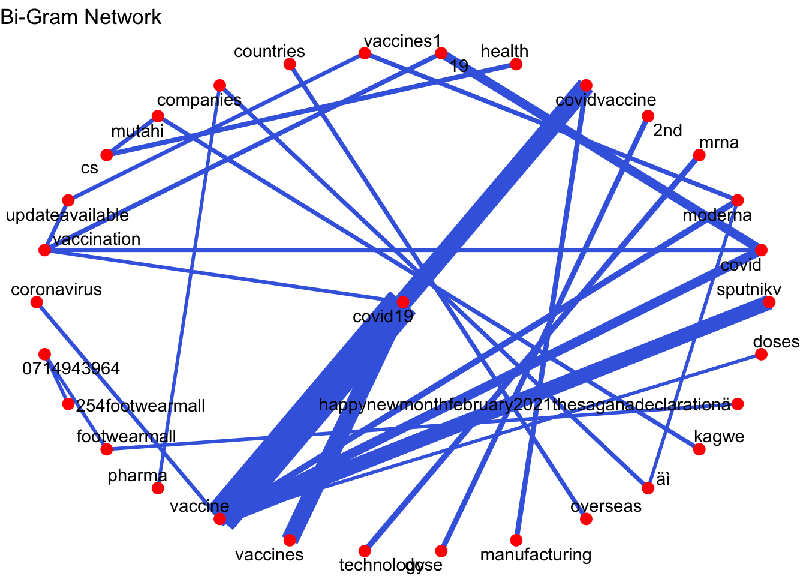

A dashboard report of COVID19 vaccine tweets in Kenya, based on text analysis and sentiment analysis using LSTM
Author
Andrew Molo
Introduction
Sentiment Analysis is a function used to get sentiment information from sentences contained in a text. The sentiments generated can either be positive, negative or neutral. In the data science field, technique used for deriving these sentiments is part of a larger discipline called Natural Language Processing (NLP).
Recurrent Neural Networks (RNN), a machine learning model widely used in NLP, is good at learning patterns on textual data that’s sequential.[1] Long short-term memory (LSTM) is a type of RNN with a higher memory power to remember outputs of current nodes for a more extended period to produce outcome(s) for the next node(s).[2]
Since twitter data contains text patterns that form trending topics and these patterns are somehow interconnected, I’ll use LSTM in classifying COVID-19 vaccine tweets posted by Kenyans on Twitter, popularly known as #KOT.
Results of this classification will be presented in a shinyDashbaord. This piece documents the steps used to munge, model and visualise the data
Global variables
Load libraries and datasets sentiment analysis R script
The data set has 1,135 rows and 14 columns. Above is output of the column names. Tweets are stored in the column name text.
Data wrangling
Prior to data wrangling, create a copy of the Raw Data. and split the data found in the location column to Town and Country respectively
# Create a copy of the DataRawData <- Data# Use cSplit() found splitstackshape to split contents found in the use_location column# user_location contains location data based on geo-tagged tweets library(splitstackshape) Data <-cSplit(Data, 'user_location', sep=",", type.convert=FALSE)
Contents in user_location column is location data based geo-tagged tweets. The data can either be one or two. Based on our split user_location_1 contains town names and user_location_2 is country names.
# Check contents of the new columns based on the splitunique(Data$user_location_1)
We’ll use functions found in the package saotd to perform further preprocessing to the text data. saotd package, published in 2019 provides functions for cleaning, summarising, visualising and modeling of twitter data. [2]. We’ll borrow two functions to summarise our data. tweet_tidy() and 3 functions for generating n-grams.
Use, tweet_tidy() to remove emoticons, punctuation marks and weblinks from the text column
# TidyData will host the clean DFTidyTweets <- saotd::tweet_tidy(DataFrame = Data )
N-grams summaries
n-grams is a continuous sequence of words present in a text. The sequence can be one word (unigram), two-adjacent words(bi-grams) or three adjacent words(tri-grams).
# Create dataframes containing the top 50 n-grams.# Unigram dataframeunigram.DF <-unigram(DataFrame = TidyTweets)# Bigram dataframebigram.DF <-bigram(DataFrame = TidyTweets)# Trigram dataframetrigram.DF <-trigram(DataFrame = TidyTweets)library(formattable)# Check the first 5 rows of most common trigrams top5trigram <- trigram.DF %>%top_n(5)# create a formattable object to display the top 5 trigramsformattable(top5trigram)
word1
word2
word3
n
covid
19
vaccination
117
health
cs
mutahi
108
19
vaccination
updateavailable
104
updateavailable
vaccines1
moderna
104
vaccination
updateavailable
vaccines1
104
Furthermore, saotd package has a function called bigram_network() that plots a network graph of all b-grams present in the dataframe
# Plot a network graph of bigram showing the relationship between two wordsbigram_network(bigram.DF, node_color ="red", set_seed =1234, layout ="star", number =90)

From the plot, the word with the most common associations is COVID19, the thickness between two vertices is an indication of the strength of the association. Therefore COVID19 vertex is is highly associated with vaccine, covidvaccine, spuntnikv and vaccines.
Deriving sentiment scores
Sentiment scores are derived based on classification of emotions present in the data. Classification of these emotions is done using the nrc lexicon which categorizes each word present in the tweets to one of the 10 sentiment categories of anger, anticipation, disgust, fear, joy, negative, positive, sadness, surprise and trust. These emotions are further classified numerically using positive numbers and negative numbers. The higher the positive number in each emotion, the higher the degree of positive sentiment that word has. Vice-versa applies.
The final product of classification is a trichotomous response variable called sentiment which holds three observations: positve, negative and neutral. Positive will hold words that have a sentiment score of 0 and above, negative classification will hold words that have a score -1 and below and finally, neutral classifications will hold words that have a score of 0.
# Create a new column called idTidyTweets <- tibble::rowid_to_column(TidyTweets, "id")# Create a dataframe called senti.score, that will have a response variable called sentiment senti.score <-data_frame(id=TidyTweets$id, text = TidyTweets$text) %>%unnest_tokens(word, text) %>%anti_join(stop_words) %>%inner_join(get_sentiments("nrc")) %>%mutate(score =ifelse(sentiment=='positive',1,ifelse(sentiment=='joy',1,ifelse(sentiment=='anticipation',1,ifelse(sentiment=='trust',1,ifelse(sentiment=='surprise',1,-1)))))) %>%group_by(id) %>%summarise(total_score =sum(score)) %>%mutate(sentiment =ifelse(total_score>0,'positive',ifelse(total_score<0,'negative','neutral')))# get the dataframe which contains tweet message, id and it's sentimentsenti.score <- TidyTweets %>%inner_join(senti.score, by='id') %>%select('id', 'text','sentiment')# Check the first five rows of the new data frame createdformattable(head(senti.score))
id
text
sentiment
8
And let the war begin. This is not the first or the last to hear of the cold war on vaccines. We are not there yet.… https://t.co/qbWK9ssV3m
negative
9
And let the war begin. This is not the first or the last to hear of the cold war on vaccines. We are not there yet.… https://t.co/qbWK9ssV3m
negative
10
And let the war begin. This is not the first or the last to hear of the cold war on vaccines. We are not there yet.… https://t.co/qbWK9ssV3m
negative
11
And let the war begin. This is not the first or the last to hear of the cold war on vaccines. We are not there yet.… https://t.co/qbWK9ssV3m
negative
12
And let the war begin. This is not the first or the last to hear of the cold war on vaccines. We are not there yet.… https://t.co/qbWK9ssV3m
negative
13
And let the war begin. This is not the first or the last to hear of the cold war on vaccines. We are not there yet.… https://t.co/qbWK9ssV3m